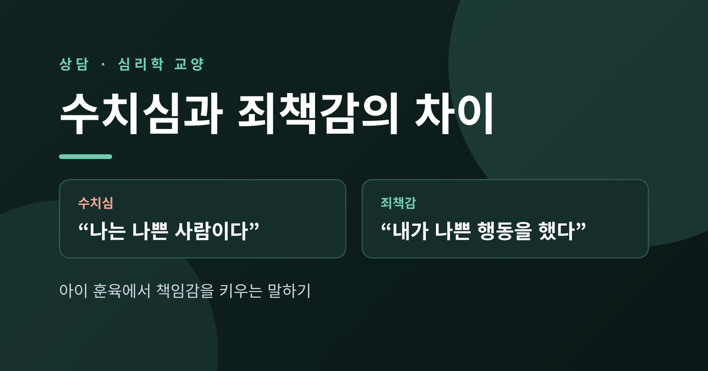
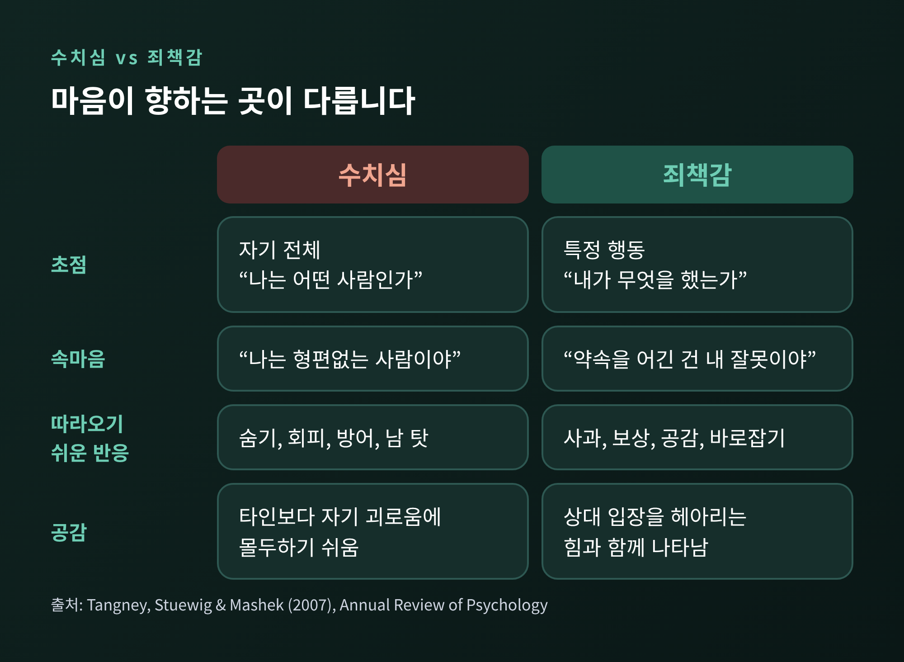
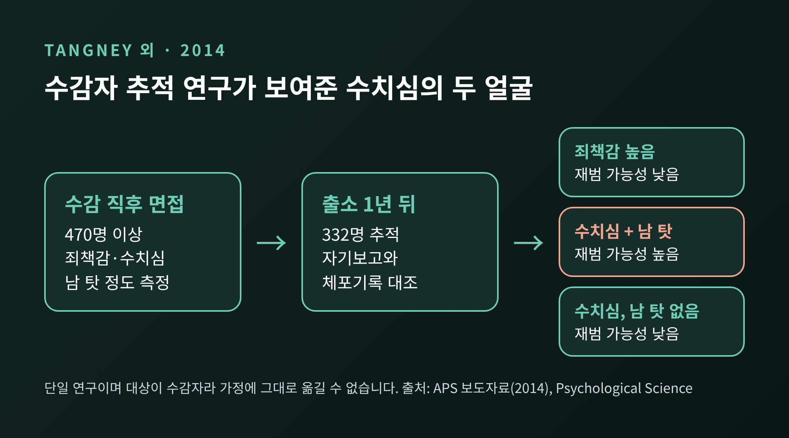
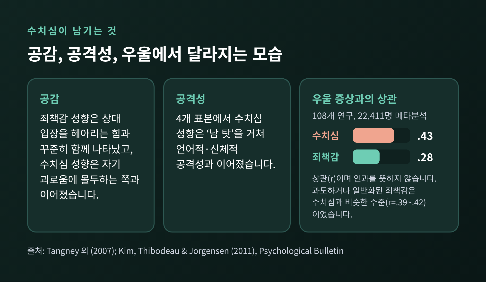
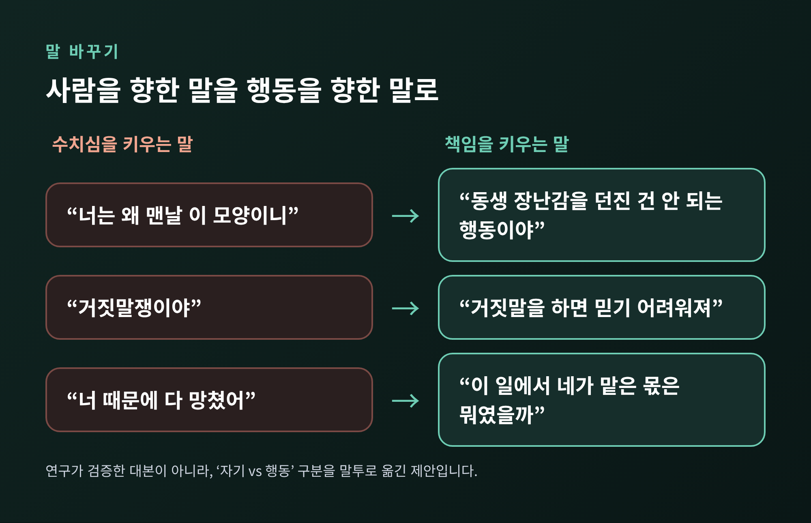
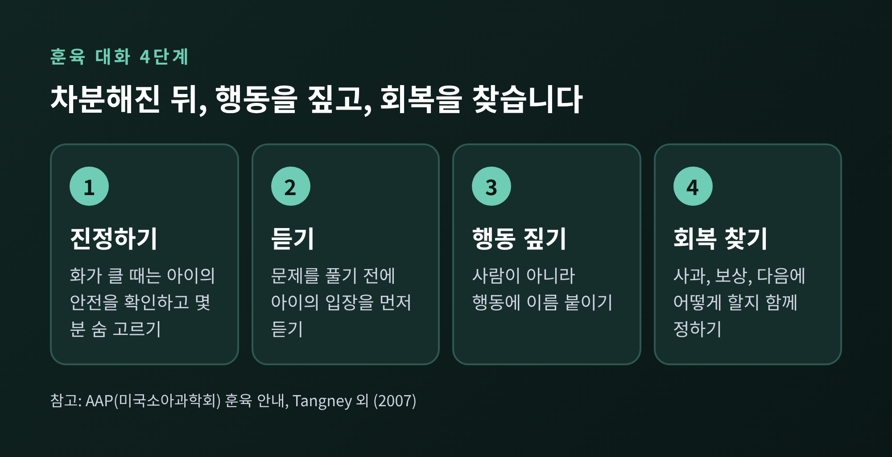

오늘은 수치심과 죄책감의 차이에 대해 이야기해 보려 합니다. 심리학자 준 탱니(June Tangney)의 연구를 바탕으로, 두 감정이 행동을 어떻게 다르게 이끄는지 살펴봅니다. 이어서 아이 훈육과 청소년, 가족 사이의 대화에서 수치심은 줄이고 책임감은 키우는 말하기를 정리하겠습니다.
세 줄 요약
두 감정은 흔히 한데 묶여 불립니다. 잘못한 뒤에 찾아오는 불편한 마음이라는 점은 같습니다. 그러나 마음이 향하는 곳이 다릅니다.
탱니와 동료들이 2007년 『Annual Review of Psychology』에 정리한 설명을 따르면, 수치심은 자기 전체에 대한 부정적 평가이고 죄책감은 특정 행동에 대한 부정적 평가입니다. 이 구분은 헬렌 블록 루이스(Helen Block Lewis)가 1971년에 세운 틀을 잇고 있습니다.
같은 사건으로 비교해 보겠습니다. 친구와의 약속을 어긴 날입니다.
앞의 생각은 숨고 싶게 만듭니다. 뒤의 생각은 움직이게 만듭니다.

한 가지 오해는 짚어 두겠습니다. 흔히 수치심은 '남 앞에서', 죄책감은 '혼자 있을 때' 느낀다고 생각합니다. 연구는 이 구분을 지지하지 않았습니다. 두 감정 모두 남이 있을 때와 혼자일 때 비슷하게 일어났습니다. 갈라지는 기준은 장소가 아니라 초점입니다.
탱니는 조지메이슨대학교에서 오랫동안 수치심과 죄책감을 연구해 왔습니다. 가장 널리 알려진 결과 중 하나가 2014년 『Psychological Science』에 실린 수감자 추적 연구입니다.
연구진은 470명이 넘는 수감자를 수감 직후에 면접했습니다. 죄책감과 수치심, 그리고 잘못을 남 탓으로 돌리는 정도를 물었습니다. 이 가운데 332명은 출소 1년 뒤에 다시 만나 재범 여부를 확인했습니다. 자기 보고를 공식 체포 기록과 맞춰 본 연구였습니다.
결과는 이렇습니다. 죄책감 성향이 높을수록 재범 가능성이 낮았습니다. 연구진은 죄책감이 사과하고 바로잡으려는 행동을 이끈다고 설명합니다. 반면 수치심이 강하면서 방어적으로 남을 탓하는 사람은 재범 가능성이 높았습니다. 흥미로운 점이 하나 더 있습니다. 수치심이 강해도 남 탓을 하지 않는 사람은 오히려 재범 가능성이 낮았습니다. 연구진은 이를 수치심의 '두 얼굴'이라 불렀습니다.

이 연구에는 한계가 있습니다. 대상이 수감자이고 단일 연구입니다. 가정의 훈육 장면에 그대로 옮길 수는 없습니다. 다만 '수치심이 곧바로 나쁜 행동으로 이어지는 것은 아니며, 수치심이 남 탓과 만날 때 위험해진다'는 대목은 새겨 둘 만합니다.
2007년 리뷰에 따르면 죄책감 성향은 상대 입장을 헤아리는 능력, 공감적 관심과 꾸준히 함께 나타났습니다. 수치심 성향은 타인을 향한 공감과는 관련이 없거나 약한 음의 관계였고, 오히려 자기 자신의 괴로움에 몰두하는 쪽과 이어졌습니다. 마음이 온통 '나는 어떤 사람인가'에 쏠리면 상대의 아픔이 들어올 자리가 줄어듭니다.
남 탓과 공격성의 연결도 확인됐습니다. 네 개 표본을 분석한 연구에서 수치심 성향은 남 탓을 거쳐 언어적·신체적 공격성과 이어졌습니다. 죄책감 성향은 네 표본 중 세 곳에서 공격성과 낮은 관계를 보였고, 공감과 책임 수용이 그 길을 부분적으로 설명했습니다.
우울과의 관계는 수치가 더 분명합니다. 킴(Kim) 등이 2011년 『Psychological Bulletin』에 낸 메타분석은 108개 연구, 22,411명의 자료를 모았습니다. 우울 증상과의 상관은 수치심이 r=.43, 죄책감이 r=.28이었습니다. 수치심 쪽이 유의하게 강했습니다.

죄책감도 무조건 이로운 것은 아닙니다. 같은 메타분석에서 상황과 무관하게 떠다니는 '일반화된 죄책감'(r=.42)이나, 통제할 수 없는 일까지 자기 책임으로 느끼는 죄책감(r=.39)은 수치심과 비슷한 수준으로 우울과 연결됐습니다. 건강한 죄책감은 '구체적인 행동'에 닿아 있을 때입니다.
그렇다면 아이에게는 어떻게 말해야 할까요. 먼저 양육과 수치심의 관계를 살펴보겠습니다.
스튜잉과 맥클로스키(Stuewig & McCloskey)는 부부 폭력을 겪은 가정의 아이들을 8년간 추적했습니다. 어린 시절 가혹한 양육은 청소년기 수치심을 높였고, 부모의 거부는 수치심과 죄책감을 함께 높였습니다. 높은 수치심은 2년 뒤 우울을 예측했고, 높은 죄책감은 비행이 적은 것과 이어졌습니다. 3~9세 아이를 추적한 밀스(Mills) 연구팀의 자료에서는, 어머니의 수치 주기가 아이의 수치심 증가와 연결되는 양상이 나타났습니다. 다만 그 방식은 아이의 성별과 기질에 따라 달랐습니다.
여기서 균형을 잡아야 합니다. 네덜란드·벨기에 청소년 477명을 대상으로 한 연구에서는 부모의 따뜻함과 거부가 모두 죄책감·수치심 지표와 양의 상관을 보였습니다. 저자들도 이를 직관에 반한다고 평가했고, 양육이 설명하는 비중은 7~16%에 그쳤습니다. 부모의 말 한마디가 아이의 수치심을 결정한다고 말할 수는 없습니다. 기질, 또래 관계, 애착 같은 요소가 함께 작용합니다.
그래도 방향은 분명합니다. 미국소아과학회(AAP)는 소리 지르기와 수치 주기가 효과가 없고, 오히려 문제 행동과 정신건강 문제를 늘릴 수 있으며 십대에서는 우울과도 이어질 수 있다고 안내합니다. 하버드 헬스의 클레어 매카시(Claire McCarthy)는 비판이 쉽게 수치 주기로 넘어가 아이가 자신에게 근본적인 문제가 있다고 믿게 만들 수 있다고 경고합니다.
한 가지 시기도 알아 둘 만합니다. 탱니는 한 인터뷰에서 아이들이 대개 죄책감보다 수치심을 먼저 느끼며, '내가 하는 일'과 '나라는 사람'을 떼어 놓고 생각하는 힘이 일곱, 여덟 살 무렵 나타난다고 말했습니다. 어린 아이에게 행동과 존재를 구분해 주는 일은 부모가 대신 해 주어야 한다는 뜻으로 읽을 수 있습니다.
아래는 위 연구들이 말하는 '자기 vs 행동'의 구분을 말투로 옮긴 제안입니다. 연구가 검증한 대본은 아닙니다. 적용은 각 가정의 사정에 맞게 하시길 권합니다.
예전엔 이렇게 말했습니다. "너는 왜 맨날 이 모양이니." 지금은 이렇게 바꿔 볼 수 있습니다. "동생 장난감을 던진 건 안 되는 행동이야."


화가 치밀 때가 가장 어렵습니다. AAP는 감정이 통제되지 않는다면 아이의 안전부터 확인하고, 몇 분 진정한 뒤에 돌아오라고 권합니다. 완벽한 말보다 차분해진 다음의 말이 더 오래 남습니다.
청소년은 수치심에 특히 민감합니다. 한국 중학생 468명을 조사한 김은경(2011)의 연구에서는 수치심과 죄책감 모두 부모화(아이가 부모 역할을 떠맡는 현상)를 설명했고, 남학생은 죄책감이, 여학생은 수치심이 더 크게 작용했습니다. 저자는 수치심 기반의 부모화는 존재 자체의 무가치감에 대한 반응이라 보상으로 풀리기 어렵다고 해석합니다. 횡단 연구라 인과를 단정할 수는 없습니다.
가정 안에서는 이렇게 정리해 볼 수 있습니다.
마지막으로 한 가지만 덧붙이겠습니다. 수치심을 완전히 없애자는 이야기가 아닙니다. 잘못 앞에서 마음이 불편한 것은 자연스럽습니다. 문제는 그 불편함이 '행동'에 머무르느냐, '존재'로 번지느냐입니다.
"나쁜 사람이라서 사과하는 것이 아니라, 좋은 사람이라서 바로잡으려는 것이다."
아이가 이렇게 생각할 수 있다면, 실수는 두려움의 대상이 아니라 배움의 자리가 됩니다. 오늘 아이에게 건넨 마지막 말은 행동을 향해 있었는지, 한번 돌아보시면 좋겠습니다.
전문상담 안내
이 글은 일반적인 심리학 정보를 정리한 것으로, 개인에 대한 진단이나 치료를 대신하지 않습니다. 자녀나 본인이 지속적인 자책, 무기력, 우울감, 분노 폭발, 자해에 대한 생각 등으로 힘들어하고 있다면 혼자 감당하지 마시고 가까운 청소년상담복지센터나 정신건강복지센터, 심리상담 전문가와 상담하시길 권합니다. 위기 상황이라면 지역 응급 서비스나 정신건강 위기상담 전화에 즉시 연락하시기 바랍니다.
참고한 자료